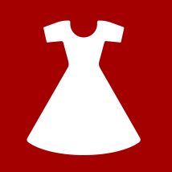

Miten oopperassa ollaan?

Pukeutuminen
On vapaa. Tummaa pukua ei edellytetä nykyisin edes ensi-illassa, joskin siisti pukeutuminen on suotavaa. Eri maissa on erilaiset kulttuurit oopperapukeutumisen suhteen. Italiassa pukeudutaan ylipäätään hienommin, Pariisissa moni menee oopperaan farkuissa ja hupparissa. Suomessa väliajalla näkee paljon Marimekkoa ja pikkutakkia, yleinen linja on smart casual. Jos haluat, voit pukeutua hienosti tai jos viihdyt vain verkkareissa, se on sallittua myös. Mene sellaisena kuin olet.
Väliaika
On tärkeä osa oopperakokemusta. Väliaikoja voi olla nollasta kahteen, riippuen oopperan kestosta. Joissain pienemmissä oopperataloissa välaikoja voi olla lavastevaihtojen takia enemmänkin. Yleensä niitä on yksi, ja se kestää noin 30 minuuttia. Jos mahdollista, väliajalle kannattaa varata pöytä ja tarjoilut etukäteen. Se ei maksa ylimääräistä, mutta säästät jonottamisen vaivan.
Väliaika
On tärkeä osa oopperakokemusta. Väliaikoja voi olla nollasta kahteen, riippuen oopperan kestosta. Joissain pienemmissä oopperataloissa välaikoja voi olla lavastevaihtojen takia enemmänkin. Yleensä niitä on yksi, ja se kestää noin 30 minuuttia. Jos mahdollista, väliajalle kannattaa varata pöytä ja tarjoilut etukäteen. Se ei maksa ylimääräistä, mutta säästät jonottamisen vaivan.
Soitot
Ennen esitystä ja väliajalta kutsutaan yleisö sisään soitoilla. Ensimmäisen soiton kuuluessa kukaan ei lotkauta vielä korvaansa, aikaa siirtyä katsomoon on vielä kymmenisen minuuttia. Toisen soiton kuuluessa yleisö alkaa siirtyä saliin. Kolmannen soiton kuuluessa esityksen alkuun on enää pari minuuttia, ja on todella aika siirtyä. Myöhässä ei saliin pääse. Kannattaa myös ottaa huomioon, että jos poistut esityksestä kesken näytöksen, et luultavasti pääse takaisin ennen seuraavan näytöksen alkua.
Paikoilleen asettuminen
Jos joudut ohittamaan muita ihmisiä katsomossa matkalla paikallesi, muistathan ohittaa heidät kasvotusten, ei pylly ohitettavaa päin. Jos jalkatilaa on vähän, paikalleen pyrkivälle kanssakatsojalle on kohteliasta antaa tilaa nousemalla seisomaan ohituksen ajaksi.
Taputukset
Kapellimestarille taputetaan näytöksen alussa, kun hän astuu podestalleen. Näytösten päättyessä luonnollisesti taputetaan myös. Väliaplodeja on lupa antaa erityisesti vaikuttavien aarioiden päätteeksi, joskin moderneissa oopperoissa musiikki usein vyöryy pysähtymättä eteenpäin, eikä välikiitoksille jää aikaa. Aplodeja on luvallista ja suotavaa tehostaa huudoin. Naiselle huudetaan ”brava”, miehelle ”bravo” ja kaikille ”bravi” tai ”bravi tutti”. Myös tömistelyä ja muunlaisia ilon kiljahduksia kuullaan.